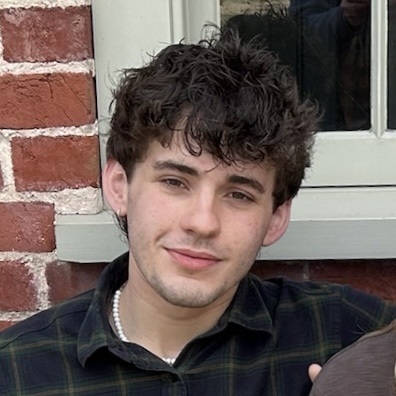

People
The team running Mercial. We are looking for more people to join us! If you are interested, fill in the expression of interest form, and we will send you an email. We don’t have a high bar - a couple of hours a week can be really helpful.

Lachlan Ewart
Director
Hi! I’m a third-year maths student. I am currently a SPAR research fellow, and I am interested in monitorability robustness. Outside of AI safety, I sometimes write about philosophy on my Substack.

John Middleton
Blog Lead
Hey! I'm a third-year software engineering degree apprentice, working at Jaguar Land Rover. I'm interested in the social side of AI Safety - concepts such as alignment to whom. I love reading, writing, and being able to prove things :)
Gideon Chang
Events Lead
Hi everyone! I am a third-year maths and statistics student. I am interested in capabilities evals, mechanistic interpretability and AI news in general. Always down for a chat, hit me up!
Matthias Endres
Advisor
I work on Behavioural Economics and Large Language Model evaluations. In my free time I think about gradual disempowerment risks and support students to find impactful careers.